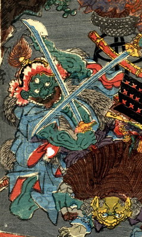

武者の刃を受ける三つ目の鬼。肌は緑色である。兜をかぶり武装している。口が大きく鋭い牙が並んでいる。
著作者：一寿斎国政（歌川国政）／出典：親書誌：U426_nichibunken_0231：四天王大江山入之圖；シテンノウオオエヤマノズ／日付：2010／資源識別子：U426_nichibunken_0231_0011_0000
Copyright (c)2010- International Research Center for Japanese Studies, Kyoto, Japan. All rights reserved.